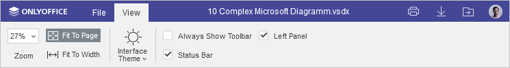
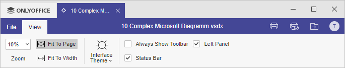

Kartica Prikaz
Kartica Prikaz u okviru Diagram Viewer-a omogućava podešavanje izgleda dijagrama tokom pregledanja, kao i lakšu navigaciju kroz dijagrame.
Odgovarajući prozor Online Diagram Viewer-a:

Odgovarajući prozor Desktop Diagram Viewer-a:

Opcije prikaza dostupne na ovoj kartici:
- Zoom – omogućava uvećavanje i umanjivanje prikaza dijagrama.
- Fit to Page – prilagođava dijagram tako da se cela stranica prikaže na ekranu.
- Fit to Width – prilagođava dijagram širini ekrana.
- Interface Theme – omogućava promenu teme interfejsa izborom između: Same as system, Light, Classic Light, Dark, Contrast Dark ili Gray.
Sledeće opcije omogućavaju podešavanje elemenata za prikaz ili skrivanje. Označite elemente koje želite da budu vidljivi:
- Always Show Toolbar – čini gornju alatnu traku uvek vidljivom.
- Status Bar – čini statusnu traku uvek vidljivom.
- Left Panel – prikazuje levu bočnu traku.